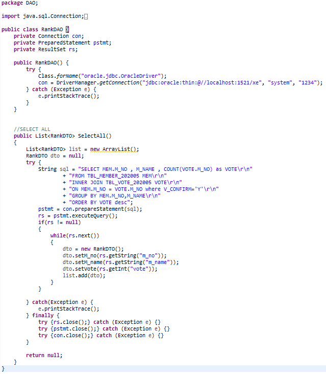

뒤로가기
연습문제 part 2
1. 다음은 자바의 기본적인 개념들에 대한것입니다 질문에 답하세요
1-1. 절차지향(Procedural Programming)이란?
-
순차적인 처리가 중요시하는 프로그래밍 기법
장점 : 컴퓨터의 처리구조와 유사하여 실행속도가 빠르다
단점 : 유지보수와 디버깅이 어렵고, 실행순서가 고정되어있어서 코드 순서가 바뀌면 동일한 결과가 나오기 어렵다
1-2. 객체지향(Objectg Oriented Programming)이란?
-
실제 세계를 모델링하여 소프트웨어를 개발하는 프로그래밍 기법
컴퓨터 부품을 하나씩 사다가 컴퓨터를 조립하는것과 같은 방법을 말함
장점 : 코드의 재활용성이 높고, 간편하며, 디버깅이 쉽다
단점 : 처리속도가 느리며 설계에 많은 시간이 들어간다
1-3. 자바의 대표적인 데이터타입 두가지와 그 타입의 데이터형을을 적고 각각의 차이를 서술하세요
-
원시타입 or 기본타입(Primitive Type)
정수,실수,문자,논리 리터럴 등 실제 데이터 값을 저장하는 타입
ex)int,float,dobule,char,boolean 등 데이터 값을 Stack영역에 저장가능한 기본적인 자료형들
-
참조타입(Reference Type)
원시 타입을 제외한 타입(문자열,배열,열거,클래스,인터페이스)를 말한다
참조 타입으로 선언된 변수는 메모리에 주소를 값으로 가지게 되고 그 주소를 통해 객체를 참조함
Heap 영역에 생성되며 참조타입은 null을 사용할 수 있다.
2. 다음 자바의 3가지 변수에 대한 내용을 서술하세요
2-1. 지역변수
-
특정한 구역(메서드) 안에서만 선언되어 그 구역에서만 사용가능한 변수
2-2. 매개변수(Paramater)
-
함수의 정의에서 전달받은 인수를 함수 내부로 전달하기 위해 사용하는 변수
2-3. 전역변수
-
클래스 전체에서 어디든 호출하면 사용가능한 변수
3. 다음 HTTP 상태 코드들에 대한 내용을 서술하세요
3-1. 200번대
-
성공 응답을 말하며 보통 일반 사용자는 확인할 수 없다
-200 OK : 요청이 성공적으로 수행됨
-201 Created : 요청이 성공적으로 수행되었고 새로운 리소스가 생성됨
-202 Accepted : 요청을 수신하였으나 그에 응해 행동할 수 없음
... 등등 존재함
3-2. 400번대
-
클라이언트 에러 응답을 말한다
-400 Bad Request : 잘못된 문법으로 인해 요청을 이해할 수 없음
-401 Unauthorized : 비인증 상태를 말함. 응답을 받으려면 인증이 필요
-403 Forbidden : 접근할 권리를 가지고 있지 않아서 거절당함
-404 Not Found : 요청받은 리소스를 찾을 수 없음. 알려지지 않은 URL을 의미
... 등등 존재함
3-3. 500번대
-
서버 에러 응답을 말한다
-500 Internal Server Error : 서버가 처리 방법을 모르는 상황
-502 Bad Gateway : 게이트웨이로 작업하는 동안 잘못된 응답을 수신했음
-503 Service Unavailable : 서버가 요청을 처리할 준비가 되지 않았음, 작동중단 또는 과부하
4. 다음 에러를 보고 코드에서 잘못된 부분을 찾아서 수정하세요.
java.lang.NullPointerException: Cannot invoke "java.util.List.iterator()" because "list" is null;

-
return값을 null로 받아서 NullPointerException 에러가 발생했다.
5. cmd에서 OracleDB 작업 수행 중 Eclipse Console에서 발생한 오류이다
각 오류가 발생하는 원인을 유추하고 어느 부분을 고쳐야 할지 서술하세요
5-1. ORA-00911: invalid character:
-
SQL문에 부적합한 문자가 들어가있을 경우(대표적으로 세미콜론)
5-2. ORA-00904: invalid identifier:
-
부적합한 식별자, 열이름이 누락되거나 잘못 되었을 경우에 발생
테이블의 존재여부와 테이블의 이름이 정확한지 확인한다.